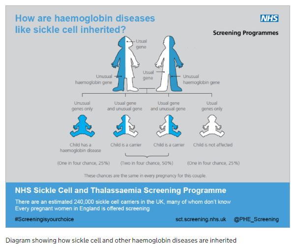

Sickle cell disease is the name for a group of blood disorders. The most severe is sickle cell
anaemia. These disorders are inherited, meaning they are passed on through genes. Children born with sickle cell
disease inherit a copy of the sickle cell gene from both of their parents, so each one of the pair of genes is
faulty. This happens when both parents are "carriers" – they carry the faulty gene for sickle cell. This is also
known as having the sickle cell trait. Carriers don't have sickle cell disease.
When both of a child's parents are sickle cell carriers:
there is a 25% (one in four) chance that each of their children won't inherit any faulty genes – they won't have
sickle cell disease, and they won't be able to pass it on to their children
there is a 50% (one in two) chance that each child will inherit a copy of the faulty gene from just one parent, and
be a sickle cell carrier
there is a 25% (one in four) chance that each child will inherit copies of the sickle cell gene from both of their
parents, and have sickle cell disease when they're born
Sickle cell disease carriers and screening
Sickle cell disease carriers are people who carry the faulty gene that causes sickle cell disease, but do not have the
disease. This is also called having the sickle cell trait. Sometimes carriers can display symptoms of Sickle cell
disease.

Sickle cell disease carriers
The sickle cell gene can be carried by anyone, but people from certain ethnic backgrounds are much more likely to be
carriers. Likely carriers include:
Africa
Asia
The Caribbean
The Eastern Mediterranean
The Middle East
Most sickle cell carriers in the UK have an African or Caribbean family background – it's estimated around one in ten
people with this background may be a sickle cell carrier. A blood test confirms sickle cell disease. Every pregnant
woman in UK is offered screening under the NHS to check if their baby is at risk of being born with sickle cell disease.
Screening should be done before the tenth week of pregnancy, so that there's time to think about further tests that can
find out if your baby will be born with sickle cell disease.
Symptoms and diagnosis
The main symptoms of sickle cell disease are sickle cell crisis (very painful episodes affecting different parts of the
body), infections, and anaemia. Specialist centres around the UK have been set up which deal specifically with
haemoglobinopathies and their management.
There are a number of serious problems that can appear suddenly as a result of sickle cell disease including:
high temperature (a fever) going to 38C (100.4F) or higher
difficulty breathing
drowsiness, confusion, or slurred speech
a severe headache, stiff neck, or dizziness
skin or lips that are very pale
fits (seizures)
serious pain that isn't responding to treatments at home
sudden swelling in the tummy
priapism – a painful erection lasting two hours or more
weakness on one or both sides of your body
sudden vision loss, or changes in your vision
Sickle cell crisis
Episodes of pain known as sickle cell crises happen when the blood vessels that go to one part of the body become
blocked. The pain can be severe. Sickle cell crisis is the most common symptoms of sickle cell disease and can occur
once a year and last up to seven days. Some people have sickle cell crises every few weeks – others experience them less
than once a year. A sickle cell crisis typically affects one part of the body at a time. The most common parts affected
are:
hands or feet (this is especially common in young children)
ribs and breastbone
spine
pelvis
tummy
legs and arms
Sickle cell crisis have different causes. They can be triggered by cold, rainy or windy weather, stress, dehydration,
or exercise that leaves you severely out of breath.
Infection
Sickle cell disease leaves people – especially children – extra vulnerable to infection because their bodies are
immunocompromised. This leaves them more vulnerable to viruses like the common cold, as well as severe and
potentially life-threatening conditions like meningitis. As well as keeping up to date with their vaccinations, many
people with sickle cell disease take daily doses of antibiotics in order to prevent infections.
Anaemia
Almost everyone with sickle cell disease has anaemia. People with anaemia have low levels of haemoglobin in their blood.
Most of the time anaemia doesn't cause symptoms, but if you're infected with parvovirus, the virus that causes slapped
cheek syndrome, the anaemia can get worse. When that happens, it causes:
headaches
a fast heartbeat
fainting
dizziness
If these symptoms occur, the anaemia is usually treated with a blood transfusion. Sudden anaemia can happen in young
children if they experience swelling of the spleen. This is also treated with a blood transfusion.
Other sickle cell disease symptoms
There's a wide range of other issues that can be caused by sickle cell disease. These include:
a serious lung condition called acute chest syndrome that can cause chest pain, a cough, breathing difficulties and
fever
pain in bones and joints
delayed puberty
delayed growth in childhood
kidney or urinary problems, including bedwetting and blood in the urine
gallstones – these are stones in the gallbladder that can cause jaundice (yellow eyes and skin) and abdominal
(tummy) pain
ulcers on the lower legs (open sores that can be very painful)
priapism – a painful, persistent erection that can last for several hours
high blood pressure (pulmonary hypertension)
transient ischaemic attacks (TIAs) or strokes – these happen when blood flow to the brain is interrupted or blocked
enlarged spleen – this can cause a fast heartbeat, worsening of anaemia, a swollen tummy, shortness of breath and
abdominal pain
vision problems like floaters, worsened night vision, blurred vision, patchy vision and, occasionally, sudden vision
loss
Treatment
People of all ages with sickle cell disease are supported by a team of medical professionals in a specialist sickle
cell centre. A specialised care plan will be developed with the patient that helps to fully understand the condition
and find the best way of managing it.
The best way to treat Sickle cell disease is to prevent a sickle cell crisis is by being aware of potential triggers
and avoiding them, such as:
Prevent dehydration by drinking plenty of fluids –especially water.
Avoid alcohol – alcohol causes dehydration.
Stay warm with enough layers of clothing to avoid getting cold, and avoid extreme temperatures.
Don't expose yourself to sudden changes in temperature – for example, avoid swimming in cold water.
The lack of oxygen at high altitudes can trigger a sickle cell crisis, so be careful if you're at high altitude for
any reason. However, plane travel shouldn't be an issue because planes maintain a consistent oxygen level due to
being pressurised.
Make sure to stay active, but avoid activities that leave you severely out of breath.
Don't smoke – smoking can trigger acute chest syndrome.
Stay relaxed as much as you can – sickle cell crises can be triggered by stress, so consider learning relaxation
techniques like breathing exercises.
Preventing infections
Children who have sickle cell disease should be kept up to date on all of their routine vaccinations, and may also need
additional vaccinations like the hepatitis B vaccine and the annual flu vaccine. Patients most likely need to take a
dose of antibiotics every day, usually penicillin. This will not pose serious health risks. Reducing risks in day-to-day
life by being careful about activities that can make them vulnerable to infection is always part of management plans.
Treating anaemia
Patients with sickle cell anaemia may need iron supplements for mild anaemia, or blood transfusions &/or
hydroxycarbamide may be necessary for serious or persistent anaemia. In addition to the treatments above, iron chelation
therapy involves taking medication to remove iron which may increase toxicity. This treatment is given to people who
need a lot of blood transfusions.